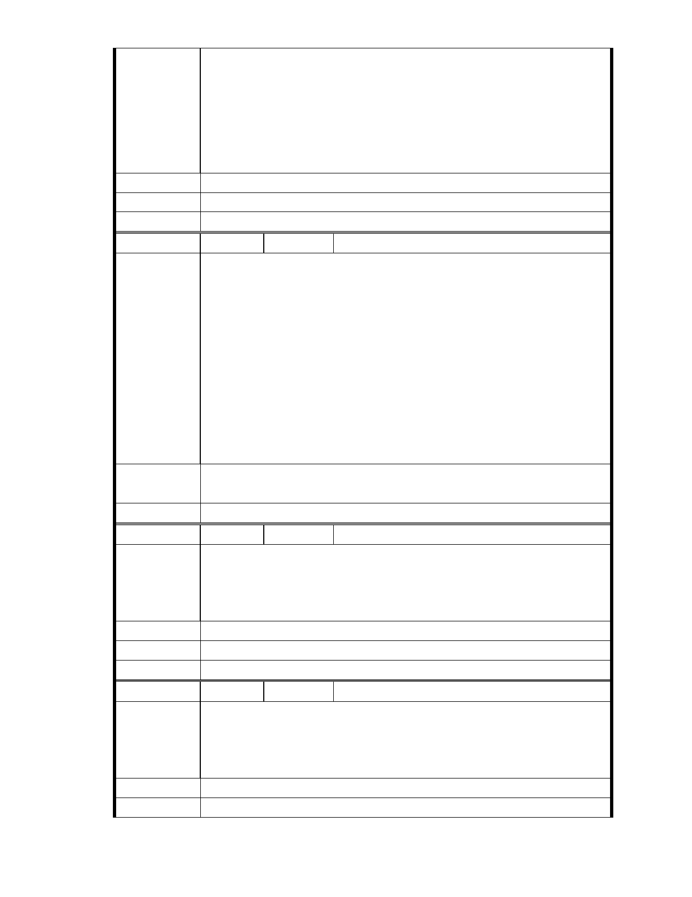

以慈濟的精神與信譽，絕非說一套、做一套，不會鑽漏洞，千方百計將
送審與實際做變更。若是市府願意合作綠建築，以慈濟的力量，軟硬體
結合，應可成為台灣揚名世界的未來示範區，可以非只如世博般死的展
示館，它會是可以呼吸、成長、有生命的人文永續建築。市府應以傳世
之心，好好的珍惜這善的軟實力，協助慈濟完成未來園區！不止是市府
之光，也是市民、台灣人民之福！
建議辦法
市 府 說 明 相關陳情意見將納入本案審查人民意見，依法定程序辦理。
委 員 會 決 議 同編號 1。
編 號 224 陳情人 鄭財德
陳情理由
該園區在未賣給慈濟之前是為客運公司的停車及修理煬, 若目前慈濟園
區為破壞大自然, 那早在客運公司時即已早被破壞, 怎麼也輪不到慈濟,
更何況目前慈濟運用此場地不就是在做環保的工作嗎? 反對的人不就是
看上這片完全平整的土地嗎? 若把一個為台灣付出這麼多, 比其他任人
何團體都還要多的單位趕走, 未來難到不會被財團利用關係將地目變更
再變賣蓋大樓, 從中得利嗎? 若為保, 那週邊的大樓, 別墅群是否也破壞
了環保問題. 當全球在認同慈濟, 聯合國接納了慈濟的同時, 我們的國人
卻不斷的利用機會, 追打為台灣的環保和慈善付出最多的團體, 真不知
台灣是不還有公平正義. 期望相關單位能用正確的頭腦和智慧思考, 否
則真的太對不起為台灣在用心付出的所有慈濟人和所有會員.
建議辦法
市 府 說 明 相關陳情意見將納入本案審查人民意見，依法定程序辦理。
委 員 會 決 議 同編號 1。
編 號 225 陳情人 劉清梅
請核准「慈濟內湖園區改善方案」。 慈濟一向以愛惜大地、利益衆生為
陳 情 理 由 前提。以您們的英明，一定可以體會到慈濟對「慈濟內湖園區改善方案」
的用心。有您們的支持，可以讓慈濟更加發揮濟世救人的功能。
建議辦法
市 府 說 明 相關陳情意見將納入本案審查人民意見，依法定程序辦理。
委 員 會 決 議 同編號 1。
編 號 226 陳情人 方美倫
新年快樂! 對於慈濟在環保上的努力大家有目共睹，也創造了多少的奇
陳 情 理 由 蹟，對於內湖開發案，慈濟絕對經過審慎評估，所以我們強烈支持這開
發案。 台北市民 方美倫
建議辦法
市 府 說 明 相關陳情意見將納入本案審查人民意見，依法定程序辦理。
- 278 -